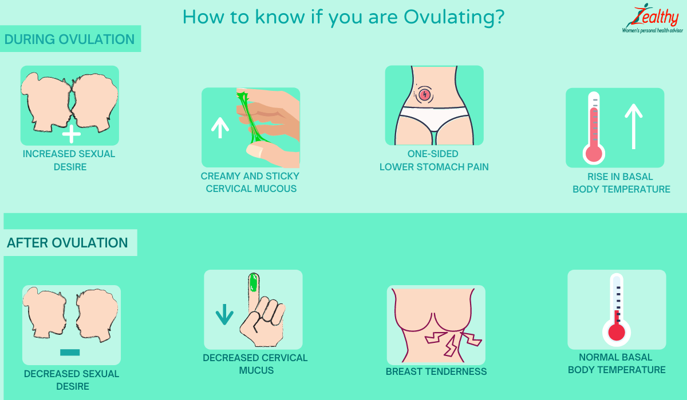

🌸 Sức khỏe Nữ giới
Sexual Wellness — Desire & Cycle DynamicsDeep dive⏱ 8 phút đọc
Đường Cong Cảm Xúc: Vì Sao Hưng Phấn Đạt Đỉnh Khi Rụng Trứng & Hạ Nhiệt Cuối Kỳ?
Nghiên cứu sinh hóa hormone của Roney & Simmons (2013) khẳng định ham muốn tình dục ở nữ giới dao động có quy luật toán học theo từng ngày của chu kỳ kinh nguyệt. Khám phá lý do tại sao tự nhiên lại lập trình đỉnh hưng phấn vào cửa sổ thụ thai, và cách progesterone đưa cơ thể về trạng thái bảo tồn năng lượng trong pha hoàng thể.
Đỉnh ham muốn tự nhiên của bạn xuất hiện vào các ngày 11–15 của chu kỳ (khi estrogen và testosterone chạm đỉnh), trong khi sự suy giảm ham muốn ở pha hoàng thể là phản ứng sinh tồn để nuôi dưỡng tổ ấm. Hãy đồng bộ hóa đời sống lứa đôi theo nhịp sinh học này để giải phóng bản thân khỏi áp lực.
Quy Luật Hóa Sinh Của Sự Quyến Rũ: Khoa Học Đằng Sau Đỉnh Rụng Trứng
Bạn đã bao giờ thức dậy vào một buổi sáng giữa chu kỳ và cảm thấy bản thân tràn đầy sức sống, làn da rạng rỡ, sự tự tin dâng trào và ham muốn gần gũi bạn đời mãnh liệt hơn hẳn bình thường? Ngược lại, chỉ hai tuần sau đó, bạn lại muốn cuộn mình trong chăn, xem phim một mình và cảm thấy chuyện gối chăn thật xa vời?
Đây không phải là sự tùy hứng hay thất thường. Trong nghiên cứu mang tính bước ngoặt được bình duyệt trên tạp chí Hormones and Behavior, hai nhà khoa học Tiến sĩ James Roney và Dario Simmons (2013) đã tiến hành đo nồng độ hormone nước bọt hàng ngày kết hợp nhật ký tình dục của hàng trăm phụ nữ. Kết quả chứng minh: sự thay đổi ham muốn tình dục của phụ nữ dao động chính xác theo một phương trình toán học gắn liền với nồng độ Estradiol và Progesterone.
Về mặt tiến hóa sinh học, tự nhiên đã cài đặt một cơ chế vô cùng thông minh: kích thích động lực tìm kiếm bạn đời vào đúng thời điểm duy nhất trong tháng mà một đứa trẻ có thể được hình thành.

🎯 Dấu Hiệu Sinh Học Thời Điểm Phóng Noãn: Sự hiệp đồng giữa đỉnh kích thích tố LH, nồng độ Estradiol tối đa và xung giải phóng testosterone ngắn hạn tạo nên đỉnh cao cảm xúc hưng phấn và ham muốn tự nhiên ở phụ nữ. Nguồn: Wikimedia Commons ↗
4 Giai Đoạn Của Đường Cong Hưng Phấn Qua Chu Kỳ
Giai Đoạn Chu Kỳ
Nền Tảng Hormone
Biểu Hiện Sinh Lý Của Vùng Kín
Mức Độ Hưng Phấn & Tâm Lý
Dấu Hiệu Nhận Biết Trên Ứng Dụng & Thiết Bị Đeo
Pha Hành Kinh (Ngày 1–5)
Estrogen & Progesterone ở mức đáy; nồng độ bắt đầu tăng từ Ngày 3.
Dòng kinh nguyệt; áp lực nhẹ vùng chậu do prostaglandin; lượng máu vùng chậu tăng.
Khởi đầu thấp ở Ngày 1–2 do mệt mỏi, nhưng có thể tăng vọt vào Ngày 4–5 khi hết kinh nhờ sự giải tỏa áp lực và estrogen bắt đầu thức giấc.
RHR hạ dần; HRV bật tăng trở lại vùng màu xanh.
Pha Nang Trứng Cao Trào (Ngày 6–11)
17β-Estradiol leo dốc mạnh mẽ; nồng độ progesterone duy trì ở mức tối thiểu.
Cổ tử cung bắt đầu tiết dịch nhầy màu mỡ (loại kem hoặc nước); lưu lượng máu âm vật tăng.
Năng lượng bùng nổ, sự tự tin giao tiếp xã hội tăng cao; bắt đầu xuất hiện những tưởng tượng tình dục tự phát (Spontaneous Fantasies).
Điểm Sẵn Sàng (Readiness) cao; nhiệt độ da ban đêm duy trì ở mức mát mẻ dưới đường nền.
Cửa Sổ Rụng Trứng Đỉnh Cao (Ngày 12–15)
Đỉnh Estradiol kết hợp đỉnh sóng LH và đợt tăng vọt Testosterone tự do ngắn hạn.
Dịch nhầy cổ tử cung trong và co giãn như lòng trắng trứng (EWCM); âm vật nhạy cảm tối đa trước kích thích xúc giác.
Đỉnh hưng phấn sinh học cao nhất tháng! Phụ nữ chủ động khởi xướng cuộc yêu nhiều hơn 2.5 lần so với các giai đoạn khác; khả năng đạt cực khoái nhanh hơn.
Điểm uốn nhiệt độ: nhiệt độ da chạm đáy trước khi bật tăng +0.3°C sau khi trứng rụng.
Pha Hoàng Thể Bảo Tồn (Ngày 16–28)
Progesterone thống trị tuyệt đối; estrogen duy trì ở mức trung bình rồi tụt dốc.
Cổ tử cung đóng lại; dịch tiết đặc và khô ráo; niêm mạc âm đạo kém nhạy hơn trước kích thích nhẹ.
Ham muốn chuyển dần từ "phiêu lưu, bùng nổ" sang nhu cầu được ôm ấp, gắn kết an toàn (Cuddling & Affection); giảm hưng phấn thể xác nếu thiếu kích thích chậm.
Nhiệt độ cơ sở neo cao; HRV giảm 10%–15%; RHR tăng +3 đến +7 bpm; ngủ nhạy cảm hơn.
Tại Sao Progesterone Lại Đóng Vai Trò Là "Chiếc Phanh Hưng Phấn"?
Nhiều cặp đôi cảm thấy bối rối khi người phụ nữ vừa tuần trước còn vô cùng nồng nhiệt, nhưng sang tuần này lại có vẻ "hờ hững". Điều này hoàn toàn do sự trỗi dậy của Progesterone:
1. Trong nghiên cứu của Roney & Simmons (2013), các nhà khoa học phát hiện ra rằng progesterone có mối tương quan nghịch đảo trực tiếp với ham muốn tình dục (p < 0.001).
2. Về mặt tiến hóa, khi trứng đã rụng (dù có được thụ tinh hay không), cơ thể bước vào chế độ "giả định mang thai". Nhiệm vụ tối thượng lúc này là bảo vệ lớp niêm mạc tử cung, tiết kiệm năng lượng và tránh các tác động cơ học mạnh từ bên ngoài có thể làm gián đoạn quá trình phôi nang làm tổ.
3. Progesterone nâng thân nhiệt lõi, tăng nhu cầu calo và khiến não bộ tiết ra chất an thần allopregnanolone—đưa người phụ nữ vào trạng thái tĩnh lặng và thận trọng hơn.
4 Lời Khuyên Ứng Dụng Đường Cong Cảm Xúc Vào Đời Sống Lứa Đôi
Lên Lịch Hẹn Hò Lãng Mạn Vào Cửa Sổ Rụng Trứng (Ngày 11–15): Hãy tận dụng sự hiệp đồng tuyệt vời của estrogen và testosterone để tổ chức những chuyến du lịch, buổi tối lãng mạn hoặc trải nghiệm mới mẻ cùng bạn đời.
Thay Đổi Cách Tiếp Cận Ở Pha Hoàng Thể: Trong 2 tuần sau khi rụng trứng, đừng kỳ vọng hưng phấn sẽ bùng nổ ngay lập tức. Người bạn đời cần kéo dài màn dạo đầu, tập trung vào sự kết nối cảm xúc, massage thư giãn và sử dụng thêm chất bôi trơn gốc nước lành tính.
Loại Bỏ Cảm Giác Tội Lỗi: Hiểu rằng việc ham muốn giảm nhẹ trước kỳ kinh là cơ chế bảo tồn sinh học lành mạnh giúp phụ nữ trút bỏ áp lực "mình phải luôn sẵn sàng mọi lúc".
Theo Dõi Chỉ Số Nhiệt Độ & Cửa Sổ Rụng Trứng Trên Ứng Dụng: Quan sát biểu đồ nhiệt độ da trên Apple Watch hoặc Oura Ring để nhận diện chính xác ngày rụng trứng, giúp bạn chủ động làm chủ cảm xúc và đời sống tình dục một cách khoa học nhất.
Tài Liệu Tham Khảo & Nguồn Y Khoa
Roney, J. R., & Simmons, Z. L. (2013).Hormonal predictors of sexual motivation in natural menstrual cycles. Hormones and Behavior, 63(4), 636–645. Báo Cáo Nghiên Cứu Gốc (NCBI PubMed: 23751336) ↗
Bullivant, S. B., Sellergren, S. A., Stern, K., et al. (2004).Women's sexual desire in natural menstrual cycles—investigating the role of estrogen, progesterone, and testosterone. Archives of Sexual Behavior, 33(4), 317–328. Báo Cáo Nghiên Cứu Gốc (NCBI PubMed: 15305113) ↗
Gangestad, S. W., Thornhill, R., & Garver-Apgar, C. E. (2007).Changes in women's mate preferences across the ovulatory cycle. Journal of Personality and Social Psychology, 92(1), 151–163. Báo Cáo Nghiên Cứu Gốc (NCBI PubMed: 17201548) ↗
Wilcox, A. J., Dunson, D., & Baird, D. D. (2000).The timing of the 'fertile window' in the menstrual cycle: day specific estimates from a prospective study. BMJ, 321(7271), 1259–1262. Tạp chí BMJ (PMID: 11082086) ↗
📚
Nguồn Tham Khảo Y Khoa & Nghiên Cứu Gốc
Bài viết này được tổng hợp và kiểm chứng từ các nghiên cứu y sinh học, hướng dẫn lâm sàng và tài liệu khoa học thiết bị đeo của Hormones and Behavior (Roney & Simmons, 2013) & Arch Sex Behav (Bullivant et al., 2004).
🌸 Women's Health
Sexual Wellness — Desire & Cycle DynamicsDeep dive⏱ 8 min read
The Desire Curve: Tracking Libido Peaks from Follicular Surge to Luteal Dip
Pioneering endocrine research by Roney & Simmons (2013) demonstrates that female sexual desire exhibits predictable mathematical fluctuations across the menstrual cycle. Discover why evolutionary biology hardwired your peak erotic arousal directly into the fertile window, and how progesterone reorients energetic reserves in the luteal phase.
Your peak biological libido naturally aligns with Days 11–15 (driven by co-surging estradiol and testosterone), whereas the post-ovulatory luteal dip is an evolutionary signal favoring energetic conservation. Synchronizing intimacy with this biological rhythm removes performance pressure and elevates relationship satisfaction.
The Biochemical Blueprint of Seduction: Science Behind the Ovulatory Zenith
Have you ever awakened mid-cycle feeling deeply energized, magnetically confident, and experiencing a marked, instinctual craving for intimacy with your partner? Conversely, just two weeks later, you find yourself wanting solitary space, cozy domestic comfort, and physical touch feels distant.
This is not fickle or accidental behavior. In landmark clinical research published in Hormones and Behavior, Dr. James Roney and Dario Simmons (2013) tracked daily salivary steroid concentrations alongside detailed sexual diaries across hundreds of naturally cycling women. Their finding was definitive: female sexual motivation exhibits predictable mathematical fluctuations governed directly by the reciprocal ratios of Estradiol and Progesterone.
From an evolutionary standpoint, nature hardwired heightened erotic desire into the solitary window of the month where conception is biologically possible.
📊 The Biological Synergy of Peak Libido: Co-surging estradiol, the LH wave, and a transient spike in free testosterone around Days 12–14 optimize sensory acuity and receptivity. Original Image Source: Wikimedia Commons ↗
The 4 Phases of the Female Desire Curve
Cycle Window
Endocrine Landscape
Genital Physiological Status
Libido & Psychological Focus
Wearable Biometric Signatures
Menstrual Phase (Days 1–5)
Basal nadir of estrogen and progesterone; begins subtle rise by Day 3.
Menstrual flow; pelvic congestion driven by prostaglandins; heightened vascularity.
Lower on Days 1–2 due to cramping, but often surges abruptly on Days 4–5 as menses tapers and estradiol awakens.
RHR declines; HRV rebounds into the green recovery zone.
Monthly biological peak in erotic arousal! Women are 2.5 times more likely to initiate intimacy; faster time to orgasm.
Temperature inflection point: wrist temperature dips slightly before jumping +0.3°C post-ovulation.
Luteal Conservation (Days 16–28)
Progesterone assumes overwhelming systemic dominance; estradiol experiences a secondary rise then drops.
Cervical os closes; thick, non-fertile discharge; vaginal mucosa is less sensitive to light touch.
Desire transitions from adventurous arousal to emotional safety, affection, and cuddling; requires slow, warm stimulation.
Elevated nocturnal skin temperature; HRV drops 10%–15%; RHR elevates by +3 to +7 bpm.
Why Progesterone Acts as a Physiological Libido Brake
Many couples experience confusion when a woman transitions from ardent passion one week to apparent distance the next. This is evolutionary biology at work via Progesterone:
1. In the Roney & Simmons (2013) trial, progesterone exhibited an inverse mathematical relationship with sexual motivation (p < 0.001).
2. Evolutionarily, once ovulation has passed, the female body assumes a presumptive pregnancy state. The biological mandate shifts to protecting the uterine environment, conserving energetic reserves, and avoiding physical trauma that might disrupt implantation.
3. Progesterone elevates core body temperature, stimulates appetite, and metabolizes into allopregnanolone, promoting introspective calm.
4 Practical Strategies to Synchronize Your Relationship with the Desire Curve
Plan Romantic Dates During the Ovulatory Window (Days 11–15): Harness the co-surge of estradiol and testosterone to schedule romantic weekend getaways or explore new shared experiences.
Reframe Intimacy During the Luteal Window: In the two weeks following ovulation, do not expect spontaneous passion to ignite in seconds. Partners should extend foreplay, focus on soothing massages, emotional connection, and utilize pH-balanced water-based lubricants.
Release Unrealistic Guilt: Understanding that luteal libido dips represent healthy biological conservation liberates women from the societal myth that they must be sexually accessible 24/7/365.
Monitor Temperature & Ovulation Signals on Wearables: Track your nocturnal wrist temperature shift on your smartwatch to identify ovulation, empowering you and your partner to navigate your monthly rhythm with scientific empathy.
References & Clinical Sources
Roney, J. R., & Simmons, Z. L. (2013).Hormonal predictors of sexual motivation in natural menstrual cycles. Hormones and Behavior, 63(4), 636–645. Read on PubMed / NIH ↗
Bullivant, S. B., Sellergren, S. A., Stern, K., et al. (2004).Women's sexual desire in natural menstrual cycles—investigating the role of estrogen, progesterone, and testosterone. Archives of Sexual Behavior, 33(4), 317–328. Read on PubMed / NIH ↗
Gangestad, S. W., Thornhill, R., & Garver-Apgar, C. E. (2007).Changes in women's mate preferences across the ovulatory cycle. Journal of Personality and Social Psychology, 92(1), 151–163. Read on PubMed / NIH ↗
Wilcox, A. J., Dunson, D., & Baird, D. D. (2000).The timing of the 'fertile window' in the menstrual cycle: day specific estimates from a prospective study. BMJ, 321(7271), 1259–1262. Read on BMJ / PubMed ↗
📚
Clinical Reference & Scientific Backing
This article is synthesized from peer-reviewed medical literature, clinical guidelines, and wearable biometric validation studies from Hormones and Behavior (Roney & Simmons, 2013) & Arch Sex Behav (Bullivant et al., 2004).